전기산업기사 (2010-07-25 기출문제)
1과목: 전기자기학
1. 전자파의 진행 방향은?
- 전계 E의 방향과 같다.
- 자계 H의 방향과 같다.
- E × H의 방향과 같다.
- ∇ × E의 방향과 같다.
(정답률: 82%)

2. 평면도체 표면에서 d[m]의 거리에 점전하 Q[C]가 있을 때, 이 전하를 무한 원까지 운반하는데 요하는 일[J]은?
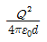
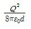
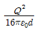
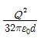
(정답률: 73%)
3. 그림과 같이 길이 ㅣ1[m], 폭 ㅣ2[m]인 직사각 코일이 자속밀도 B[Wb/m2]인 평등 자계 내에 코일면의 법선이 자계의 방향과 θ각으로 놓여있다. 코일에 흐르는 전류가 I[A]이면 코일에 작용하는 회전력은 몇 [N ㆍ m]인가? (단, 코일의 권수는 n이다.)
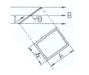
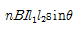
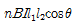
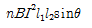
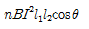
(정답률: 67%)
4. 투자율이 다른 두 자성체의 경계면에서 굴절각과 입사각의 관계가 옳은 것은? (단, μ : 투자율, θ1 : 입사각, θ2 : 굴절각)
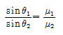
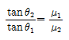
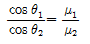
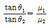
(정답률: 83%)
5. 한금속에서 전류의 흐름으로 인한 온도 구배 부분의 줄열 이외의 발열 또는 흡열에 관한 현상은?
- 펠티에 효과
- 볼타 법칙
- 지벡 효과
- 톰슨 효과
(정답률: 70%)
6. 지름 10[cm]인 원형 코일 중심에서 자계가 1000[A/m]이다. 원형 코일이 100회 감겨 있을 때, 전류는 몇[A]인가?
- 1
- 2
- 3
- 5
(정답률: 60%)
7. 그림 (a)의 인덕턴스에 전류가 그림 (b)와 같이 흐를 때, 2초에서 6초 사이의 인덕턴스 전압 VL[V]은?
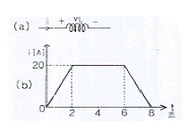
- 0
- 5
- 10
- 20
(정답률: 65%)
8. 정전 용량이 C인 콘덴서에서 극판 사이의 비유전율이 2인 유전체를 제거하고 공기로 채운 경우, 그 때의 용량을 C0라고 하면, C와 C0의 관계는?
- C=2C0
- C=4C0
- C=C0/4
- C=C0/2
(정답률: 69%)
9. 암페어의 주회적분 법칙은 직접적으로 다음의 어느 관계를 표시 하는가?
- 전하와 전계
- 전류와 인덕턴스
- 전류와 자계
- 전하와 전위
(정답률: 74%)
10. 거리 r에 반비례하는 전계의 크기를 주는 대전체는?
- 점전하
- 선전하
- 구전하
- 무한 평면전하
(정답률: 75%)
11. 구의 입체각은 몇 스테 라디안 [sr] 인가?
- π
- 2π
- 4π
- 8π
(정답률: 65%)
12. 기전력 V[V], 내부저항 r[Ω]인 전지에 전열기를 연결했을 때, 전열기의 발열을 최대로 낼 수 있는 최대 전력[W]은?
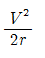
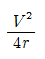
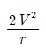
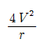
(정답률: 61%)
13. 유전체 중의 전계의 세기를 E, 유전율을 ℇ이라 하면, 전기 변위는?
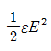
- E/ε
- εE2
- εE
(정답률: 64%)
14. 쌍극자 자기 모멘트를 이용하면 자화율과 절대 온도의 관계는 어떠한가?
- 항상 같다.
- 비례한다.
- 반비례한다.
- 관계가 없다.
(정답률: 38%)
15. 무한히 넓은 평행판 콘덴서에서 두 평행판 사이의 간격이 d[m]일 때, 단위 면적당 두 평행판 사이의 정전용량 [F/m2]은? (단, 매질은 공기이다.)
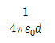
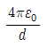
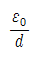
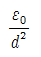
(정답률: 67%)
16. 두개의 자력선이 동일한 방향으로 흐르면 자계의 강도는 한개의 자력선에 비하여 어떻게 되는가?
- 더 약해진다.
- 주기적으로 약해졌다 또는 강해졌다 한다.
- 더 강해진다.
- 강해졌다가 약해진다.
(정답률: 65%)
17. 주파수가 100[MHz]인 전자파가 비투자율 μr=1, 비유전율 ℇr=36인 물질 속에서 전파할 경우 파장[m]은? (단, 감쇄정수 =0이다.)
- 0.5
- 1
- 1.5
- 2
(정답률: 49%)
18. 공기 중에 10[cm] 떨어져 평행으로 놓여진 두개의 무한히 긴 도선에 왕복전류가 흐를 때, 단위 길이 당 0.04[N]의 힘이 작용한다면 이 때 흐르는 전류는 약 몇 [A]인가?
- 58
- 62
- 83
- 141
(정답률: 57%)
19. 10[㎌]의 콘덴서를 100[V]로 충전한 것을 단락시켜 0.1[ms]에 방전시켰다고 하면 평균 전력은 몇[W] 인가?
- 450
- 500
- 550
- 600
(정답률: 61%)
20. 6.28[A]가 흐르는 무한장 직선 도선상에서 1[m] 떨어진 점의 자계의 세기[A/m]는?
- 0.5
- 1
- 2
- 3
(정답률: 69%)
2과목: 전력공학
21. 단락 전류를 제한하기 위하여 사용되는 것은?
- 현수애자
- 사이리스터
- 한류리액터
- 직렬콘덴서
(정답률: 75%)
22. 화력 발전소의 기본 사이클이다. 그 순서가 올바른 것은?
- 급수펌프→과열기→터빈→보일러→복수기→다시 급수펌프
- 급수펌프→보일러→과열기→터빈→복수기→다시 급수펌프
- 보일러→과열기→복수기→터빈→급수펌프→축열기→다시 과열기로
- 보일러→급수펌프→과열기→복수기→급수펌프→다시보일러
(정답률: 74%)
23. 송전선로에서 역섬락이 생기기 가장 쉬운 경우는?
- 선로 손실이 큰 경우
- 코로나 현상이 발생한 경우
- 선로정수가 균일하지 않을 경우
- 철탑의 탑각 접지 저항이 큰 경우
(정답률: 77%)
24. 원자로에서 독작용을 올바르게 설명한 것은?
- 열중성자가 독성을 받는 것을 말한다.
- 방사성 물질이 생체에 유해 작용을 하는것을 말한다.
- 열중성자 이용률이 저하되고 반응도가 감소되는 작용을 말한다.
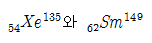
가 인체에 독성을 주는 작용을 말한다.
(정답률: 66%)
25. 중성점 저항 접지 방식의 병행 2회선 송전선로의 지락사고 차단에 사용되는 계전기는?
- 선택 접지 계전기
- 거리 계전기
- 과전류 계전기
- 역상 계전기
(정답률: 68%)
26. 피뢰기의 제한전압이란?
- 상용 주파수의 방전 개시전압
- 충격파의 방전 개시전압
- 충격 방전 종료 후 전력 계통으로부터 피뢰기에 상용 주파수 전류가 흐르고 있는 동안의 피뢰기 단자전압
- 충격 방전 전류가 흐르고 있는 동안의 피뢰기의 단자 전압의 파고값
(정답률: 72%)
27. 총단면적이 같은 경우 단도체와 비교해 볼 때 복도체의 이점으로 옳지 않는 것은?
- 정전 용량이 증가한다.
- 안정도가 증가한다.
- 송전 전력이 증가한다.
- 코로나 임계전압이 낮아진다.
(정답률: 63%)
28. 송전선로의 안정도 향상 대책으로 볼 수 없는 것은?
- 속응 여자방식을 채용한다.
- 재폐로 방식이나 복도체 방식을 채용한다.
- 단락비가 작은 발전기를 사용한다.
- 고속 차단기를 사용한다.
(정답률: 69%)
29. 적산 유량곡선상의 임의의 점에서 그은 절선의 기울기는 그 점에서 해당하는 일자에 있어서의 무엇을 표시하는가?
- 하천 유량
- 적산 유량
- 하천 수위
- 사용 유량
(정답률: 43%)
30. 소호 리액터의 탭이 공진점을 벗어나고 있는 정도를 나타내는데 합조도라는 용어가 사용된다 .합조도가 정(+)이 되는 상태를 나타낸 것은?
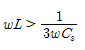
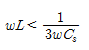
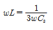
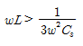
(정답률: 46%)
31. 430[mm2]의 ACSR (반지름 r=14.6mm)이 그림과 같이 배치되어 완전 연가 된 송전선로가 있다. 인덕턴스는 약 얼마[mH/㎞]정도인가? (단, 지표상의 높이는 이도의 영향을 고려한 것이다)
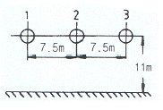
- 1.34
- 1.39
- 1.44
- 1.49
(정답률: 45%)
32. 전등 부하에 공급하고 있는 그림 A,D와 같은 단상 2선식 저압 배전 간선이 있다. A, B, C, D의 각 점의 부하전류 및 각 부하점의 거리는 그림에 표시한 바와 같다. 이 저압 간선 중의 한 점 F에서 공급되는 것으로 하고 FA 및 FD간의 전압강하를 동일하게 하는 F점의 위치를 구하면? (단, 리액턴스의 굵기는 AD간을 전부 같게 하고, 또 전선의 리액턴스를 무시한다.)
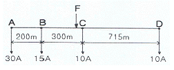
- B에서 C방향으로 80m인 점
- B에서 C방향으로 90m인 점
- B에서 C방향으로 1000m인 점
- B에서 C방향으로 110m인 점
(정답률: 50%)
33. 차단기에서 "O-t1-CO-t2-CO”의 표기로 나타내는 것은? (단, O:차단 동작, t1, t2:시간 간격, C:투입 동작, CO: 투입 직후 차단)
- 차단기 동작 책무
- 차단기 재폐로 계수
- 차단기 속류 주기
- 차단기 무전압 시간
(정답률: 76%)
34. 조상설비라고 볼 수 없는 것은?
- 단권 변압기
- 분로 리액터
- 전력용 콘덴서
- 동기 조상기
(정답률: 66%)
35. 송전선로의 단락보호 계전방식이 아닌 것은?
- 과전류 계전방식
- 방향단락 계전방식
- 거리 계전방식
- 과전압 계전방식
(정답률: 62%)
36. 비접지식 송전선로에 1선 지락 고장이 생겼을 경우 지락점에 흐르는 전류는?
- 직류 전류이다.
- 고장 지점의 영상전압보다 90도 빠른 전류이다.
- 고장 지점의 영상전압보다 90도 늦은 전류이다.
- 고장 지점의 영상 전압과 동상의 전류이다.
(정답률: 61%)
37. 1선당 저항 5[Ω], 리액턴스가 6[Ω]인 3상 4선식 배전선로의 말단(수전단)에 역율(지상) 0.8인 4800[kW]의 3상 평형부하가 접속되어 있을 경우 수전단 전압이 20[kV]라면 이 선로의 전압강하 [V]는 약 얼마인가?
- 1316
- 1824
- 2280
- 3160
(정답률: 43%)
38. 설비 용량의 합계가 3[kW]인 주택에서 최대 수요 전력이 2.1[kW]일 때의 수용률 [%]은?
- 51
- 58
- 63
- 70
(정답률: 67%)
39. 3상 3선식 송전선을 연가 할 경우 일반적으로 전체 선로 길이의 몇 배수로 등분해서 연가 하는가?
- 2
- 3
- 4
- 5
(정답률: 74%)
40. 송전선로의 코로나 발생을 방지하는 대책으로 가장 효과적인 방법은?
- 전선의 선간거리를 증가시킨다.
- 선로의 대지 절연을 강화한다.
- 철탑의 접지 저항을 낮게 한다.
- 전선을 굵게 하거나 복도체를 사용한다.
(정답률: 74%)
3과목: 전기기기
41. 2000/100 [V] 변압기의 1차 임피던스가 Z[Ω]이면 2차로 환산한 임피던스[Ω]는?
- Z/400
- Z/100
- 100Z
- 400Z
(정답률: 54%)
42. 변압기의 전기적 특성을 알아보는데 편리한 시험 중 회로의 정수를 구하는 방법에 필요 없는 것은?
- 저항 측정
- 무부하 시험
- 절연 내력 시험
- 단락 시험
(정답률: 50%)
43. 순저항 부하를 갖는 3상반파 위상제어 정류 회로에서 출력 전류가 연속이 되는 점호각 α의 범위는?
- α ≤ 30°
- α >30°
- α ≤ 60°
- α >60°
(정답률: 63%)
44. 직류기의 전기자 반작용을 방지하기 위한 가장 좋은 방법은?
- 균압환 설치
- 공극의 증가
- 보상권선 설치
- 탄소 브러시 사용
(정답률: 76%)
45. 60[Hz], 6극의 권선형 유도 전동기의 2차 유기 전압이 정지시에 1000[V]라 한다. 슬립 3[%]일 때의 2차 전압은?
- 10
- 20
- 30
- 60
(정답률: 60%)
46. 직류기의 효율이 최대가 되는 경우는?
- 와류손=히스테리시스손
- 기계손=전기자동손
- 전부하동손=철손
- 고정손=부하손
(정답률: 57%)
47. 권선형 유도 전동기의 기동법은?
- 기동 보상기법
- 2차 저항에 의한 기동법
- 전전압 기동법
- Y - △기동법
(정답률: 66%)
48. 정격 단자전압 Vn, 무부하 단자전압 V0일 때, 동기 발전기의 전압변동률[%]은?
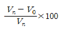
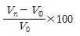
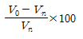
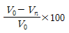
(정답률: 63%)
49. 3상 동기 발전기에서 그림과 같이 1상의 권선을 서로 똑같은 2조로 나누어서 그 1조의 권선 전압을 E[V], 각 권선의 전류를 I[A]라 하고 2중 Y형(double star)으로 결선한 경우 선간전압[V], 선전류[A], 피상전력[W]은?
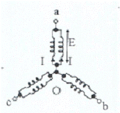
- 3E, I, 5.19EI
- √3E, 2I, 6EI
- E, 2√3I, 6EI
- √3E, √3I, 5.19EI
(정답률: 57%)
50. SCR을 사용한 단상 브리지 정류 회로에 의하여 실효값 200[V]의 교류 전압을 정류 할 경우 직류 출력 전압[V]은? (단, 제어각은 30도 이다.)
- 87.6
- 120.5
- 155.9
- 173.2
(정답률: 33%)
51. 정류자형 주파수변환기의 설명 중 틀린 것은?
- 유도 전동기를 2차 여자법으로 속도제어 하는데 사용하지만 유도기의 역률을 개선할 수는 없다.
- 회전자는 3상 회전변류기의 전기자와 거의 같은 구조이며 정류자와 3개의 슬립링이 있다.
- 소용량이고 가장 간단한 것은 회전자만으로 고정자는 없다.
- 외부에서 회전력을 공급하는데 회전 방향과 속도에 따라 다양한 주파수를 얻을 수 있는 전기기계이다.
(정답률: 45%)
52. 3상 유도전압 조정기의 특징이 아닌 것은?
- 1차 권선은 회전자에 감고, 2차 권선은 고정자에 감는다.
- 두 권선은 2극 또는 4극으로 감는다.
- 입력 전압과 출력 전압의 위상이 같다.
- 분로 권선에 회전자계가 발생한다.
(정답률: 59%)
53. 동기기의 전기자 저항을 r[Ω], 반작용 리액턴스를 Xa[Ω], 누설 리액턴스를 XL[Ω]이라고 하면 동기 임피던스는 어떻게 표시되는가?
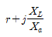
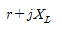
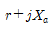
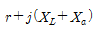
(정답률: 68%)
54. 다음 시험 중 변압기의 절연 내력 시험을 하기 위한것은? (A : 온도 상승 시험, B : 유도 시험, C: 가압시험, D : 단락시험, E : 충격전압시험, F : 권선저항측정시험)
- B, C, E
- A, B, E
- B, E ,F
- D, E, F
(정답률: 50%)
55. 단상 직권 정류자 전동기의 전압 정류 개선법에 도움이 되지 않는 것은?
- 보상 권선
- 보극 설치
- 저저항 리이드
- 고저항 브러시
(정답률: 68%)
56. 변압기 철심의 구조가 아닌 것은?
- 동심 원통형
- 외철형
- 권철심형
- 내철형
(정답률: 51%)
57. 출력 3[kW], 1500[rpm]인 전동기의 토크[kg ㆍ m]는?
- 1.95
- 2.12
- 2.90
- 3.82
(정답률: 63%)
58. 동기 전동기의 특징이 아닌 것은?
- 항상 역률 1로 운전 할 수 있다.
- 여자를 약하게 하면 진상 역율의 전류를 흘린다.
- 저속도용은 일반적으로 유도 전동기에 비해 효율이 좋다.
- 기동 토크가 작다.
(정답률: 43%)
59. 직류 분권 전동기의 단자 전압과 계자 전류를 일정하게 하고 2배의 속도로 2배의 토크를 발생하는데 필요한 전력은 처음 전력의 몇 배인가?
- 불변
- 2배
- 4배
- 8배
(정답률: 59%)
60. 유도 전동기의 원선도를 작성하는데 필요한 시험은?
- 부하시험
- 충격전압 시험
- 상용주파가압 시험
- 무부하시험
(정답률: 69%)
4과목: 회로이론
61. 다음과 같은 회로에서 a, b 사이의 합성저항[Ω]은?
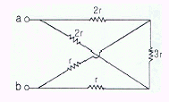
- r
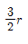
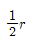
- 3r
(정답률: 72%)
62. 다음 회로에서 10[Ω]의 저항에 흐르는 전류[A]는?
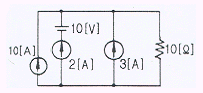
- 20
- 15
- 10
- 8
(정답률: 71%)
63. 다음 회로의 양 단자에서 테브난의 정리에 의한 등가 회로로 변환할 경우 전원 전압과 저항은?
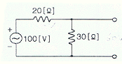
- 60[V], 12[Ω]
- 60[V], 15[Ω]
- 50[V], 15[Ω]
- 50[V], 50[Ω]
(정답률: 73%)
64. 교류 전압 100[V], 전류 20[A]로서 1.2[kW]의 전력을 소비하는 회로의 리액턴스 [Ω]는?
- 3
- 4
- 6
- 8
(정답률: 46%)
65. 전원과 부하가 모두 △결선 된 3상 평형 회로에서 전원 전압이 200[V], 부하 임피던스가 6 + j8[Ω]인 경우 선전류[A]는?
- 20
- 20/√3
- 20√3
- 10√3
(정답률: 60%)
66. 단상 전력계 2개로 평형 3상 부하의 전력을 측정하였더니 각각 200[W]와 400[W]를 나타내었다면 이 때 부하역률은 약 얼마인가?
- 1
- 0.866
- 0.707
- 0.5
(정답률: 62%)
67. i=2+5sin(100t+30°) + 10sin(200t-10°)와 파형이 동일하나 기본파의 위상이 20°늦은 비정현 교류파의 순시값 i를 나타내는 식은?
- i=2+5sin(100t+10°) + 10sin(200t-30°)
- i=2+5sin(100t+10°) + 10sin(200t+30°)
- i=2+5sin(100+t10°) + 10sin(200t+50°)
- i=2+5sin(100t+10°) + 10sin(200t-50°)
(정답률: 38%)
68.
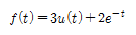
인 시간 함수를 라플라스 변화한 것은?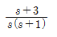
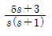
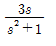
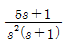
(정답률: 66%)
69. 저항 40[Ω], 임피던스 50[Ω]의 직렬 유도부하에서 100[V]가 인가될 때, 소비되는 무효전력은?
- 120 [Var]
- 160 [Var]
- 200 [Var]
- 250 [Var]
(정답률: 45%)
70. 다음이 설명하는 것으로 알맞은 것은?
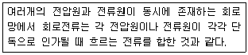
- 노오튼의 정리
- 중첩의 원리
- 키리히호프의 법칙
- 테브난의 정리
(정답률: 60%)
71. 다음과 같은 회로에서 L=50[mH], R=20[kΩ]인 경우 회로의 시정수㎲는?
- 4.0
- 3.5
- 3.0
- 2.5
(정답률: 69%)
72. 한상의 임피던스가20+j10[Ω]인 Y결선 부하에 대칭 3상 선간전압 200[V]를 가할 때 전 소비전력 [W]은?
- 1600
- 1700
- 1800
- 1900
(정답률: 50%)
73. 저항 8[Ω]과 용량 리액턴스 Xc[Ω]가 직렬로 접속된 회로에 100[V], 60[hz]의 교류를 가하니 10[A]의 전류가 흐른다면 이 때 Xc[Ω]의 값은?
- 10
- 8
- 6
- 4
(정답률: 62%)
74. 다음과 같은 회로가 정저항 회로로 되기 위한 C의 값은? (단 R=10[Ω], L=100[mH] 이다.)
- 1[㎌]
- 10[㎌]
- 100[㎌]
- 1000[㎌]
(정답률: 56%)
75. 어떤 교류 전압의 평균값이 382[V]일 때 실효값은 약 얼마 [V]인가?
- 390
- 424
- 540
- 614
(정답률: 55%)
76. 어떤 교류 전압의 기본파가 100[V]이고, 제 3고조파가 기본파의 4[%], 제 5고조파가 기본파의 3[%]이었다면 이 전압의 왜형률 [%]은?
- 12
- 10
- 7
- 5
(정답률: 62%)
77. 이상적인 전압원과 전류원의 내부 저항은?
- 전압원과 전류원의 내부저항은 모두 0이다.
- 전압원의 내부저항은 무한대이고, 전류원의 내부저항은 0이다.
- 전압원과 전류원의 내부저항은 모두 무한대이다.
- 전압원은 내부저항은 0이고, 전류원의 내부저항은 무한대이다.
(정답률: 56%)
78. 다음 회로에서 E=40[V]일 때 정상 전류 [A]는?
- 0.5
- 1
- 2
- 4
(정답률: 67%)
79. 스위치 S를 닫을 때의 전류 i(t) [A]는?
(정답률: 61%)
80. 다음과 같은 회로에서 1[Ω] 저항 양단에 걸리는 전압은?
- 2[V]
- 3[V]
- 4[V]
- 6[V]
(정답률: 38%)
5과목: 전기설비기술기준 및 판단 기준
81. 사용 전압이 35[kV] 이하인 특고압 가공 전선이 건조물과 제 2차 접근 상태로 시설되는 경우에 특고압 가공 전선로는 제 몇 종 특고압 보안 공사를 하여야 하는가?
- 제 1종 특고압 보안공사
- 제 2종 특고압 보안공사
- 제 3종 특고압 보안공사
- 제 4종 특고압 보안공사
(정답률: 67%)
82. 다음 중 발전소의 계측 요소가 아닌것은?
- 발전기의 전압 및 전류
- 발전기의 고정자 온도
- 저압용 변압기의 온도
- 변압기의 전류 및 전력
(정답률: 59%)
83. 아크 용접장치의 용접 변압기에서 용접전극에 이르는 부분에 사용할 수 없는 전선은?
- 고무 시스 용접용 케이블
- 클로로프렌 캡타이어 케이블
- 천연 고무 시스 용접용 케이블
- 비낼 캡타이어 케이블
(정답률: 62%)
84. 고압 보안 공사에서 지지물로 A종 철근 콘크리트주를 사용 할 때, 경간은 몇[m]이하 이어야 하는가?
- 75
- 100
- 150
- 200
(정답률: 59%)
85. 지중 전선로에 있어서 폭발성 가스가 침입할 우려가 있는 장소에 시설하는 지중함은 크기가 몇[m3] 이상일 때 가스를 방산 시키기 위한 장치를 시설하여야 하는가?
- 0.25
- 0.5
- 0.75
- 1.0
(정답률: 62%)
86. 사람이 접촉할 우려가 있는 제 1종 또는 제 2종 접지 공사의 지하 75[cm]로부터 지표상 2[m]까지의 접지선은 사람의 접촉 우려가 없도록 하기 위하여 접지선은 다음 중 어느 것을 사용하여 보호하여야 하는가?
- 금속관
- 합성 수지관
- 셀룰러 덕트
- 플로어 덕트
(정답률: 61%)
87. 다음 중 플로어 덕트 공사에 의한 저압 옥내 배선 공사에 적합하지 않은 것은?
- 사용 전압은 400[V]미만일 것
- 덕트의 끝 부분은 막을 것
- 제 3종 접지공사를 할 것
- 옥외용 비닐 절연전선을 사용할 것
(정답률: 72%)
88. 사용 전압이 220[V]인 경우 애자 사용 공사에서 전선과 조영재 사이의 이격거리는 몇[cm] 이상이어야 하는가?
- 2.5
- 4.5
- 6.0
- 8.0
(정답률: 57%)
89. 애자 사용 공사에 의한 고압 옥내 배선을 시설하고자 한다. 다음 중 잘못된 내용은?
- 저압 옥내배선과 쉽게 식별되도록 시설한다.
- 전선은 공칭 단면적 6[mm2] 이상의 연동선을 사용한다.
- 전선 상호간의 간격은 8[cm]이상 이어야 한다.
- 전선과 조영재 사이의 이격거리는 4[cm]이상이어야 한다.
(정답률: 50%)
90. 다음 중 전력 보안 통신용 전화 설비를 시설하지 않아도 되는 곳은?
- 원격 감시 제어가 되지 않는 발전소
- 원격 감시 제어가 되지 않는 변전소
- 2이상의 발전소 상호간
- 2이상의 급전소 상호간
(정답률: 50%)
91. 특고압 전선로에 접속하는 배전용 변압기를 시설하는 경우에 특고압 전선에 특고압 절연전선 또는 케이블을 사용하였다면 변압기의 1차 전압은 몇 [kV]이하 이어야 하는가? (단, 발전소, 변전소, 개폐소 이외의곳)
- 20
- 35
- 50
- 70
(정답률: 59%)
92. 다음 중 가연성 분진에 전기설비가 발화원이 되어 폭발할 우려가 있는 곳에 시공할 수 있는 저압 옥내 배선 공사는?
- 버스 덕트 공사
- 라이팅 덕트 공사
- 가요 전선관 공사
- 금속관 공사
(정답률: 73%)
93. 시가지내에 시설하는 154[kV] 가공 전선로에 지락 또는 단락이 생겼을 경우에 몇 초 안에 이를 자동적으로 전로로부터 차단하는 장치를 시설하여야 하는가?
- 1
- 3
- 5
- 10
(정답률: 60%)
94. 지중전선로를 직접 매설식에 의하여 시설하는 경우 매설 깊이는 차량 기타 중량물의 압력을 받을 우려가 있는 장소에서는 몇[m] 이상으로 시설하여야 하는가?(2021년 개정된 KEC 규정 적용됨)
- 0.6
- 1.0
- 1.2
- 2.4
(정답률: 72%)
95. 사용 전압이 저압인 전로에서 정전이 어려운 경우 등 절연 저항이 측정이 곤란한 경우에 누설 전류는 몇[mA]이하로 유지하여야 하는가?
- 1
- 2
- 3
- 5
(정답률: 54%)
96. 저압 가공전선으로 케이블을 사용하는 경우이다. 케이블은 조가용선에 행거로 시설하고 이 때 사용전압이 고압인 때에는 행거의 간격을 몇 [cm] 이하로 시설하여야 하는가?
- 30
- 50
- 75
- 100
(정답률: 62%)
97. 다음 중 전기 부식 방지를 위한 귀선의 시설방법에 대한 설명으로 옳지 않은 것은?
- 귀선은 부극성으로 할 것
- 이음매 하나의 저항은 그 레일의 길이 5m의 저항에 상당한 값 이하일 것
- 귀선용 레일은 특수한 곳 이외에는 길이 30m 이상이 되도록 연속하여 용접할 것
- 단면적 38[mm2]이상, 길이 60[cm]이상의 연동 연선을 사용한 본드 2개 이상을 용접함으로써 레일 용접에 갈음할 수 있다.
(정답률: 52%)
98. 연료 전지 및 태양전지 모듈의 절연내력 시험을 하는 경우 충전 부분과 대지 사이에 어느 정도의 시험 전압을 인가하여야 하는가? (단, 연속해서 10분간 가하여 견디는 것이어야 한다. )
- 최대 사용전압의 1.5배 직류전압 또는 1.25배 교류전압
- 최대 사용전압의 1.25배 직류전압 또는 1.25배 교류전압
- 최대 사용전압의 1.5배 직류전압 또는 1배 교류전압
- 최대 사용전압의 1.25배 직류전압 또는 1배 교류전압
(정답률: 46%)
99. 철탑의 강도를 계산에 사용하는 이상시 상정 하중을 계산하는데 사용되는 것은?
- 미진에 의한 요동과 철구조물의 인장하중
- 풍압이 전선로에 직각방향으로 가하여 지는 경우의 하중
- 이상 전압이 전선로에 내습하였을 때 생기는 충격 하중
- 뇌가 철탑에 가하여졌을 경우의 충격하중
(정답률: 58%)
100. 동일 지지물에 저고압의 가공 전선을 병가 할 때, 전선간의 이격 거리는 몇[cm]이상 이어야 하는가?
- 50
- 60
- 80
- 100
(정답률: 45%)